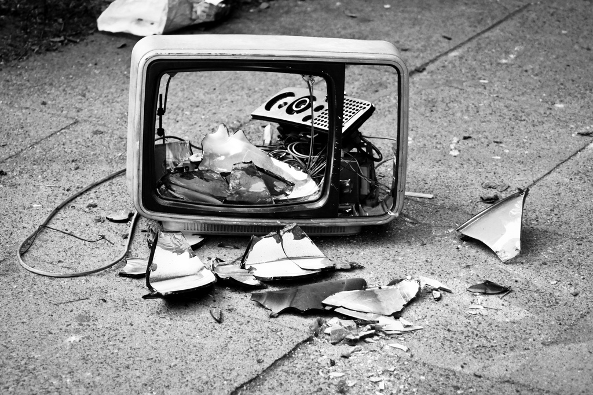

Легендата казва, че който изпие тази полу пълна чаша с бира, поздрави (на майка) компа, ще успее да мине успешно дадения изпит за който е била лекцията. А докато допива бира слуша и някоя мелодия на самоДивата Цеца, ще вземе отлична оценка и на следващият си проект.

Чупен телевизор
Дело на Симо
Това е първият чупен телевизор на Симо. Според преданията, когато замахнал и ударил телевизора, в момента на удара 4 вулкана изригнали, 7 девственици родили, небето се разтворило и настъпил световен мир за 1.23 секунди. Ако притежаваш тази реликва (тв-то) ще може да вземеш с отличен един изпит по твой избор.
Книги на Наков
4 тома поздрави от Наков
На вашето внимание представяме за първи път пълната колекция от 4-те тома със специалните поздрави на Наков. Могат да се използват за всякакви поводи - докато чакаш да ти зареди страницата или когато ти излизат странни реклами на нея, също когато нещо не работи на компа, т.е. поздравите са свързани главно с компа.